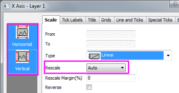
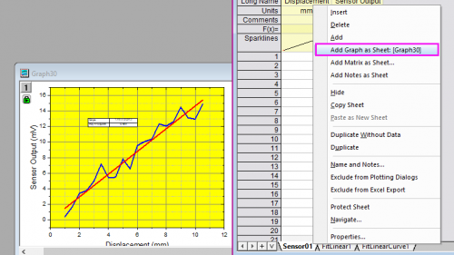

Analysevorlage
GSB-analysis-template-lesson
In dieser Lektion erfahren Sie, wie Sie eine Analysevorlage erstellen und sie erneut für neue Daten einsetzen.
- Fahren Sie mit der Projektdatei fort, die Sie beim Durchführen der vorherigen Lektion gespeichert haben. Erstellen Sie einen Ordner im Projekt Explorer und geben Sie ihm den Namen Analysevorlage. Öffnen Sie den leeren Ordner.
- Öffnen Sie eine neue Arbeitsmappe und importieren Sie die Datei <Origin EXE Path>\Samples\Curve Fitting\Sensor01.dat.
- Markieren Sie Spalte B und wählen Sie Zeichnen > Meine Vorlagen: MeinLiniendiagramm, um ein Liniendiagramm mit der Diagrammvorlage MeinLiniendiagramm.otp zu erstellen, die Sie in Lektion 1 gespeichert haben.
- Wählen Sie bei aktivem Diagrammfenster Analyse: Anpassen: Linearer Fit im Menü. Der Dialog Lineare Anpassung wird aufgerufen.
- Aktivieren Sie auf der Registerkarte Fit-Steuerung das Kontrollkästchen Fester Schnittpunkt mit der Y-Achse, um zu erzwingen, dass die angepasste Kurve durch (0,0) geht. Wählen Sie die Option Auto für Neu berechnen. Klicken Sie auf OK, um die lineare Anpassung durchzuführen. Die angepasste Kurve und eine Ergebnistabelle werden zu dem Diagramm hinzugefügt.
- Klicken Sie mit der rechten Maustaste auf die Ergebnistabelle und wählen Sie im Kontextmenü Mengen in Tabelle. Entfernen Sie im Dialog alle Einträge, die nicht Steigung und Kor. R-Quadrat sind. Klicken Sie dann auf OK, um die Tabelle zu aktualisieren.
- Klicken Sie doppelt auf die X-Achse, um den Dialog Achsen zu öffnen. Halten Sie bei aktiver Registerkarte Skalierung die Strg-Taste gedrückt und wählen Sie Horizontal und Vertikal im Listenfeld auf der linken Seite. Setzen Sie Neu skalieren auf die Option Auto und klicken Sie auf OK. Auf diese Weise ist sichergestellt, dass der Achsenbereich bei Datenänderung aktualisiert wird.

- Markieren Sie die Legende im Diagramm und löschen Sie sie.
- Kehren Sie zurück zur Quellarbeitsmappe. Klicken Sie mit der rechten Maustaste auf einen der Arbeitsblattreiter und wählen Sie Diagramm als Blatt hinzufügen im Kontextmenü, um es als ein eingebettetes Diagramm in ein neues Arbeitsblatt einzufügen.

- Jetzt haben Sie Quelldaten und alle Analyseergebnisse in einer Mappe. Speichern Sie sie als Analysevorlage. Wählen Sie Datei: Arbeitsmappe als Analysevorlage speichern im Menü. Speichern Sie die Arbeitsmappe unter dem Namen MeineSensoranalyse.ogw.
-
 |
Jede Arbeitsmappe, die über eine Operationsverknüpfung für Eingabe und Ausgabe verfügt, gekennzeichnet durch ein Schloss auf Ausgabeblättern bzw. -spalten, kann als eine Analysevorlage gespeichert werden. Das einfachste Beispiel wäre ein Blatt, in dem Spaltenwertberechnungen durchgeführt wurden.
|
- Verwenden Sie jetzt den Menübefehl Datei: Zuletzt verwendete Mappen, um MeineSensoranalyse.ogw zu öffnen. Die Analysevorlage wird geöffnet. Beachten Sie, dass Datenblatt, Ergebnisse und Diagramme leer sind.
- Wählen Sie bei aktivem Arbeitsblatt des ersten Datensatzes Hilfe > Ordner öffnen: Sample-Ordner. Gehen Sie dann zum Unterordner Curve Fitting. Ziehen Sie die Datei Sensor02.dat in das Blatt.
- Die Ergebnisse der linearen Regression und das eingebettete Diagramm werden automatisch aktualisiert, da der Modus für Neu berechnen im Hilfsmittel Lineare Anpassung mit Auto festgelegt wurde.
|
Analysevorlagen können manuell verwendet werden, um jeweils eine Datei nacheinander zu verarbeiten. Sie können aber auch verwendet werden, um eine Stapelanalyse von mehreren Datendateien oder Datensätzen durchzuführen. Bitte lesen Sie auch das Tutorial Stapelverarbeitung, um mehr darüber zu erfahren.
|
Speichern Sie Ihre Projektdatei.